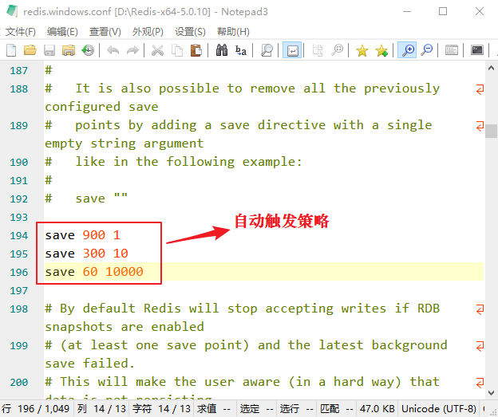

Redis RDB持久化详解（原理+配置策略）
Redis 是一款基于内存的非关系型数据库，它会将数据全部存储在内存中。但是如果 Redis 服务器出现某些意外情况，比如宕机或者断电等，那么内存中的数据就会全部丢失。因此必须有一种机制能够保证 Redis 储存的数据不会因故障而丢失，这就是 Redis 的数据持久化机制。
数据的持久化存储是 Redis 的重要特性之一，它能够将内存中的数据保存到本地磁盘中，实现对数据的持久存储。这样即使在服务器发生故障之后，也能通过本地磁盘对数据进行恢复。
Redis 提供了两种持久化机制：第一种是 RDB，又称快照（snapshot）模式，第二种是 AOF 日志，也就追加模式。本节先讲解 RDB 快照模式，关于 AOF 日志会在《Redis AOF持久化详解》一节讲解。
Redis 服务器不仅需要服务线上请求，同时还要备份内存快照。在备份过程中 Redis 必须进行文件 IO 读写，而 IO 操作会严重服务器的性能。那么如何实现既不影响客户端的请求，又实现快照备份操作呢，这时就用到了多进程。
Redis 使用操作系统的多进程 COW(Copy On Write) 机制来实现快照持久化操作。
RDB 实际上是 Redis 内部的一个定时器事件，它每隔一段固定时间就去检查当前数据发生改变的次数和改变的时间频率，看它们是否满足配置文件中规定的持久化触发条件。当满足条件时，Redis 就会通过操作系统调用 fork() 来创建一个子进程，该子进程与父进程享有相同的地址空间。
Redis 通过子进程遍历整个内存空间来获取存储的数据，从而完成数据持久化操作。注意，此时的主进程则仍然可以对外提供服务，父子进程之间通过操作系统的 COW 机制实现了数据段分离，从而保证了父子进程之间互不影响。
SAVE 命令会阻塞 Redis 服务器进程，直到 dump.rdb 文件创建完毕为止，在这个过程中，服务器不能处理任何的命令请求。
因为
上图所示， save m n 的含义是在时间 m 秒内，如果 Redis 数据至少发生了 n 次变化，那么就自动执行
只要上述三个条件任意满足一个，服务器就会自动执行
我们知道，在 RDB 持久化的过程中，子进程会把 Redis 的所有数据都保存到新建的 dump.rdb 文件中，这是一个既消耗资源又浪费时间的操作。因此 Redis 服务器不能过于频繁地创建 rdb 文件，否则会严重影响服务器的性能。
RDB 持久化的最大不足之处在于，最后一次持久化的数据可能会出现丢失的情况。我们可以这样理解，在 持久化进行过程中，服务器突然宕机了，这时存储的数据可能并不完整，比如子进程已经生成了 rdb 文件，但是主进程还没来得及用它覆盖掉原来的旧 rdb 文件，这样就把最后一次持久化的数据丢失了。
RDB 数据持久化适合于大规模的数据恢复，并且还原速度快，如果对数据的完整性不是特别敏感（可能存在最后一次丢失的情况），那么 RDB 持久化方式非常合适。
数据的持久化存储是 Redis 的重要特性之一，它能够将内存中的数据保存到本地磁盘中，实现对数据的持久存储。这样即使在服务器发生故障之后，也能通过本地磁盘对数据进行恢复。
Redis 提供了两种持久化机制：第一种是 RDB，又称快照（snapshot）模式，第二种是 AOF 日志，也就追加模式。本节先讲解 RDB 快照模式，关于 AOF 日志会在《Redis AOF持久化详解》一节讲解。
RDB快照模式原理
RDB 即快照模式，它是 Redis 默认的数据持久化方式，它会将数据库的快照保存在 dump.rdb 这个二进制文件中。提示：所谓“快照”就是将内存数据以二进制文件的形式保存起来。
我们知道 Redis 是单线程的，也就说一个线程要同时负责多个客户端套接字的并发读写，以及内存数据结构的逻辑读写。Redis 服务器不仅需要服务线上请求，同时还要备份内存快照。在备份过程中 Redis 必须进行文件 IO 读写，而 IO 操作会严重服务器的性能。那么如何实现既不影响客户端的请求，又实现快照备份操作呢，这时就用到了多进程。
Redis 使用操作系统的多进程 COW(Copy On Write) 机制来实现快照持久化操作。
RDB 实际上是 Redis 内部的一个定时器事件，它每隔一段固定时间就去检查当前数据发生改变的次数和改变的时间频率，看它们是否满足配置文件中规定的持久化触发条件。当满足条件时，Redis 就会通过操作系统调用 fork() 来创建一个子进程，该子进程与父进程享有相同的地址空间。
Redis 通过子进程遍历整个内存空间来获取存储的数据，从而完成数据持久化操作。注意，此时的主进程则仍然可以对外提供服务，父子进程之间通过操作系统的 COW 机制实现了数据段分离，从而保证了父子进程之间互不影响。
RDB持久化触发策略
RDB 持久化提供了两种触发策略：一种是手动触发，另一种是自动触发。1) 手动触发策略
手动触发是通过SAVAE命令或者BGSAVE命令将内存数据保存到磁盘文件中。如下所示：127.0.0.1:6379> SAVE OK 127.0.0.1:6379> BGSAVE Background saving started 127.0.0.1:6379> LASTSAVE (integer) 1611298430上述命令
BGSAVE从后台执行数据保存操作，其可用性要优于执行 SAVE 命令。SAVE 命令会阻塞 Redis 服务器进程，直到 dump.rdb 文件创建完毕为止，在这个过程中，服务器不能处理任何的命令请求。
BGSAVE命令是非阻塞式的，所谓非阻塞式，指的是在该命令执行的过程中，并不影响 Redis 服务器处理客户端的其他请求。这是因为 Redis 服务器会 fork() 一个子进程来进行持久化操作（比如创建新的 dunp.rdb 文件），而父进程则继续处理客户端请求。当子进程处理完后会向父进程发送一个信号，通知它已经处理完毕。此时，父进程会用新的 dump.rdb 文件覆盖掉原来的旧文件。因为
SAVE命令无需创建子进程，所以执行速度要略快于BGSAVE命令，但是SAVE命令是阻塞式的，因此其可用性欠佳，如果在数据量较少的情况下，基本上体会不到两个命令的差别，不过仍然建议您使用 BGSAVE命令。注意：LASTSAVE 命令用于查看 BGSAVE 命令是否执行成功。
2) 自动触发策略
自动触发策略，是指 Redis 在指定的时间内，数据发生了多少次变化时，会自动执行BGSAVE命令。自动触发的条件包含在了 Redis 的配置文件中，如下所示：

图1：数据持久化策略
图1：数据持久化策略
上图所示， save m n 的含义是在时间 m 秒内，如果 Redis 数据至少发生了 n 次变化，那么就自动执行
BGSAVE命令。配置策略说明如下：- save 900 1 表示在 900 秒内，至少更新了 1 条数据，Redis 自动触发 BGSAVE 命令，将数据保存到硬盘。
- save 300 10 表示在 300 秒内，至少更新了 10 条数据，Redis 自动触 BGSAVE 命令，将数据保存到硬盘。
- save 60 10000 表示 60 秒内，至少更新了 10000 条数据，Redis 自动触发 BGSAVE 命令，将数据保存到硬盘。
只要上述三个条件任意满足一个，服务器就会自动执行
BGSAVE命令。当然您可以根据实际情况自己调整触发策略。
注意：每次创建 RDB 文件之后，Redis 服务器为实现自动持久化而设置的时间计数和次数计数就会被清零，并重新开始计数，因此多个策略的效果不会叠加。
RDB持久化优劣势
最后我们对 RDB 持久化的优劣势做简单地分析：我们知道，在 RDB 持久化的过程中，子进程会把 Redis 的所有数据都保存到新建的 dump.rdb 文件中，这是一个既消耗资源又浪费时间的操作。因此 Redis 服务器不能过于频繁地创建 rdb 文件，否则会严重影响服务器的性能。
RDB 持久化的最大不足之处在于，最后一次持久化的数据可能会出现丢失的情况。我们可以这样理解，在 持久化进行过程中，服务器突然宕机了，这时存储的数据可能并不完整，比如子进程已经生成了 rdb 文件，但是主进程还没来得及用它覆盖掉原来的旧 rdb 文件，这样就把最后一次持久化的数据丢失了。
RDB 数据持久化适合于大规模的数据恢复，并且还原速度快，如果对数据的完整性不是特别敏感（可能存在最后一次丢失的情况），那么 RDB 持久化方式非常合适。
关注公众号「站长严长生」，在手机上阅读所有教程，随时随地都能学习。内含一款搜索神器，免费下载全网书籍和视频。

微信扫码关注公众号